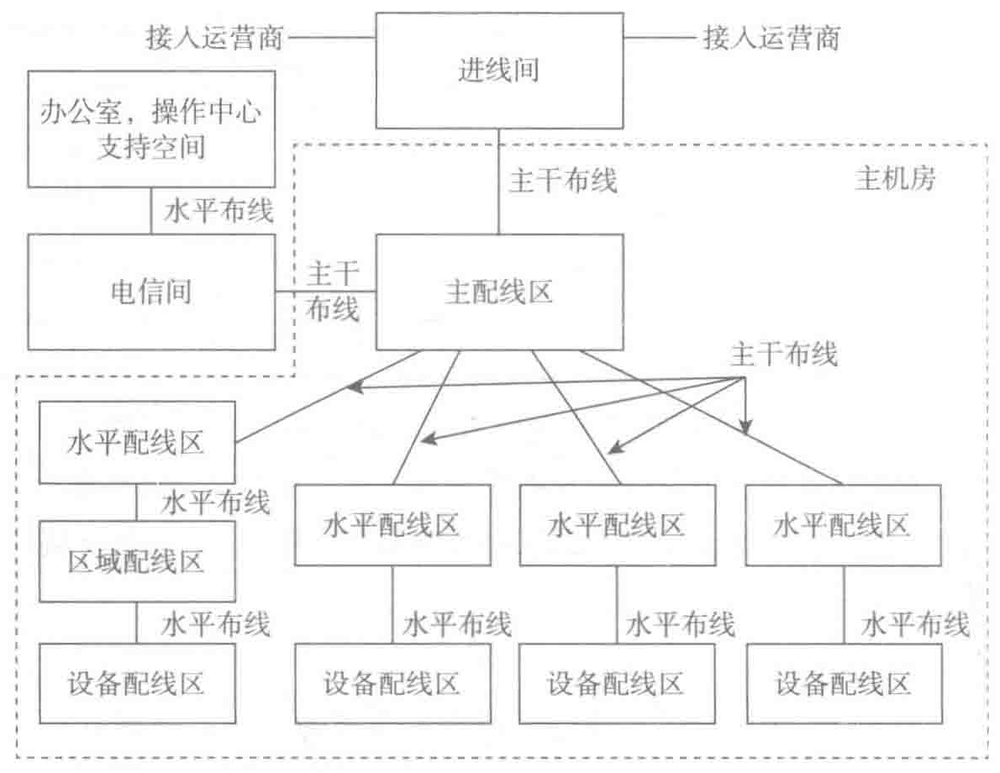
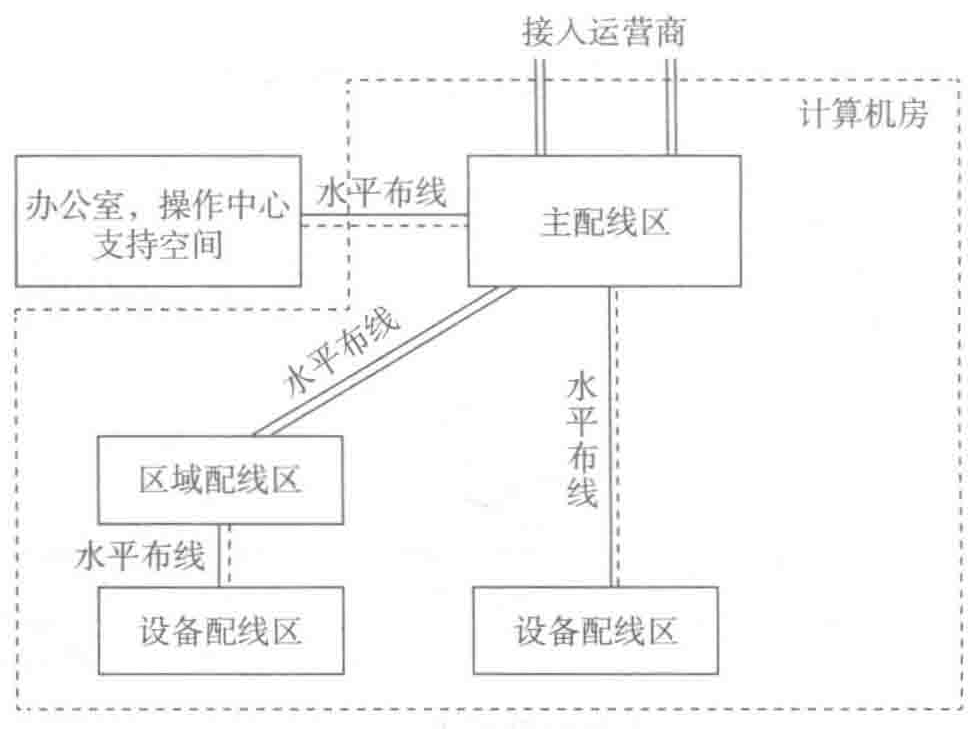

5. 简化的数据中心布线结构
当布线规模小到一个机柜或机架时，主交叉连接和水平交叉连接可以在单独的 MDA 中合并，在简化的数据中心布线结构中，也可以将支持区的布线和接入间都合并到 MDA 中。简化的数据中心拓扑如图 7-16 所示。

6. 分布式数据中心拓扑
大型数据中心或分布在多个楼层和多个区域的数据中心，可以设置 IDA 进行中间交叉
PDF第234页 · 已逐页校对

当布线规模小到一个机柜或机架时，主交叉连接和水平交叉连接可以在单独的 MDA 中合并，在简化的数据中心布线结构中，也可以将支持区的布线和接入间都合并到 MDA 中。简化的数据中心拓扑如图 7-16 所示。

大型数据中心或分布在多个楼层和多个区域的数据中心，可以设置 IDA 进行中间交叉